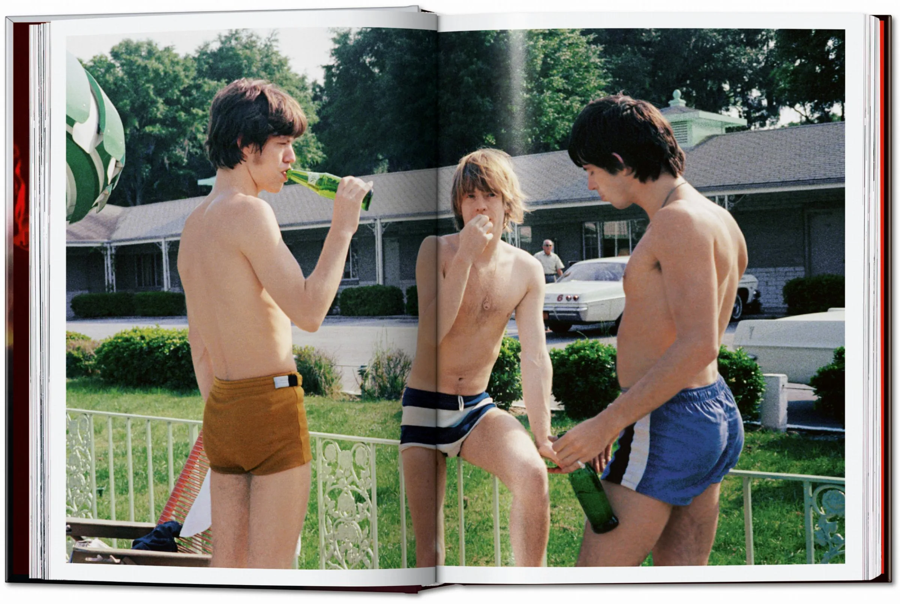

todos estos libros estarán expuestos a lo largo del recorrido
visitar página oficial de Taschen
Horario:
De lunes a viernes:
9:00 - 21:00
Sábados, domingos y festivos:
9:00 - 19:00
Dirección:
Paseo del Prado, 8, 28014 Madrid, España
Metro:
Línea 2 - Banco de España
Buses:
Líneas 1 · 2 · 5 · 9 · 10 · 14 · 15 · 20 · 27 · 34 · 37 · 45 · 51
La exposición propone un recorrido cronológico por la historia de Taschen y por la evolución de la forma en la que consumimos arte y cultura visual desde finales del siglo XX hasta la actualidad. A través de una selección de publicaciones icónicas, la muestra explora cómo la editorial transformó el libro de arte tradicional en un objeto accesible, visual y global, capaz de acercar disciplinas como la pintura, la fotografía, la arquitectura, el cine o la moda a nuevas generaciones de lectores. El recorrido comienza con algunas de las primeras publicaciones de la editorial, entre las que destaca una de las primeras ediciones de Magritte Basic Art, perteneciente a la colección Basic Art, una serie que marcó un antes y un después al democratizar el acceso a libros de arte de calidad a precios asequibles.
A partir de esta etapa inicial, la exposición avanza por distintas décadas mostrando cómo Taschen amplió su catálogo y reflejó los cambios culturales, visuales y tecnológicos de cada época. La muestra reúne además varias ediciones de coleccionismo actualmente descatalogadas y difíciles de encontrar, algunas concebidas como auténticos objetos de diseño y exhibición. Entre libros de gran formato, ediciones limitadas y publicaciones dedicadas a figuras clave de la cultura contemporánea, la exposición pone en valor no solo el contenido de los libros, sino también su dimensión física, estética y editorial. Más allá de una recopilación de publicaciones, la exposición plantea una reflexión sobre el papel del libro en la era digital y sobre cómo Taschen consiguió convertir el arte en un producto cultural accesible sin perder su carácter visual y coleccionable. A través de este recorrido, el visitante podrá observar cómo el libro de arte pasó de ser un objeto reservado a especialistas a convertirse en una pieza presente en la cultura visual contemporánea.

todos estos libros estarán expuestos a lo largo del recorrido
visitar página oficial de Taschen
"TASCHEN books were actually like TV:
going everywhere,
reaching everyone."
Benedikt Taschen